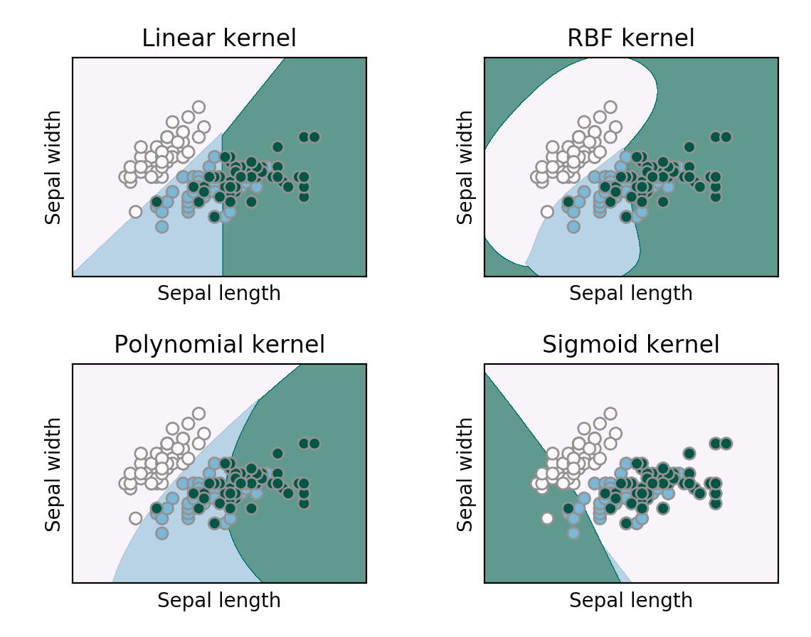

import numpy as np
import pandas as pd
from sklearn.preprocessing import StandardScaler
from sklearn.model_selection import train_test_split
from sklearn.svm import SVC
import ipywidgets as widgets
from IPython.display import display
import matplotlib.pyplot as plt
from matplotlib.lines import Line2DIntroduction
In this week’s discussion section, we will use simulated datasets to create a widget that looks at the results of a Support Vector Machine. The simulated datasents represent different relationships within our data. Our widget will allow us to select different kernels, regularization parameters, and methods for calculating gamma, allowing us to see how these changes change the classification of our data. The image below serves as a reminder of a few of the different kernels we can use in a Support Vector Machine.

Data
As mentioned above, the data we will be working with this week is all simulated. Copy the code cell below to obtain the data.
Excercise
Load in libraries
Create simulated data
def generate_environmental_datasets():
"""
Generate various environmental-themed synthetic datasets, including new datasets
tailored to test different characteristics in SVM modelling.
"""
np.random.seed(42) # Ensure reproducibility
# 1. Pollution Impact Dataset
pollution_data = pd.DataFrame({
'industrial_emissions': np.random.normal(50, 15, 300),
'water_quality': np.random.normal(60, 10, 300),
'environmental_impact': np.zeros(300, dtype=int)
})
pollution_data.loc[
(pollution_data['industrial_emissions'] > 60) &
(pollution_data['water_quality'] < 50),
'environmental_impact'
] = 2 # High Impact
pollution_data.loc[
(pollution_data['industrial_emissions'] >= 40) &
(pollution_data['industrial_emissions'] <= 60) &
(pollution_data['water_quality'] >= 50) &
(pollution_data['water_quality'] <= 70),
'environmental_impact'
] = 1 # Medium Impact
# 2. Climate Zones Dataset
climate_data = pd.DataFrame({
'temperature': np.random.normal(20, 10, 300),
'precipitation': np.random.normal(50, 20, 300),
'climate_zone': np.zeros(300, dtype=int)
})
climate_data.loc[
(climate_data['temperature'] > 25) &
(climate_data['precipitation'] > 70),
'climate_zone'
] = 0 # Tropical
climate_data.loc[
(climate_data['temperature'] < 10) &
(climate_data['precipitation'] < 30),
'climate_zone'
] = 1 # Arid
climate_data.loc[
(climate_data['temperature'] >= 10) &
(climate_data['temperature'] <= 25) &
(climate_data['precipitation'] >= 30) &
(climate_data['precipitation'] <= 70),
'climate_zone'
] = 2 # Temperate
# Linearly Separable Dataset
X1 = np.random.randn(100, 2) + [2, 2]
X2 = np.random.randn(100, 2) + [5, 5]
X_linear = np.vstack((X1, X2))
y_linear = np.array([0]*100 + [1]*100)
df_linear = pd.DataFrame(X_linear, columns=['Temperature', 'Humidity'])
df_linear['Pollution_Level'] = y_linear
# Non-linearly Separable Data (Circular Boundaries)
length = 200
radius = 2
angle = np.linspace(0, 2 * np.pi, length)
X1_circular = np.vstack((np.sin(angle) * radius, np.cos(angle) * radius)).T + np.random.randn(length, 2) * 0.1
X2_circular = np.random.randn(length, 2) * 0.5
X_circular = np.vstack((X1_circular, X2_circular))
y_circular = np.array([0] * length + [1] * length)
df_circular = pd.DataFrame(X_circular, columns=['CO2_Emission', 'Water_Usage'])
df_circular['Area_Type'] = y_circular
# XOR-like Data
X1_xor = np.random.randn(50, 2) + [2, 2]
X2_xor = np.random.randn(50, 2) + [2, 5]
X3_xor = np.random.randn(50, 2) + [5, 2]
X4_xor = np.random.randn(50, 2) + [5, 5]
X_xor = np.vstack((X1_xor, X2_xor, X3_xor, X4_xor))
y_xor = np.array([0]*100 + [1]*100)
df_xor = pd.DataFrame(X_xor, columns=['Species_Count', 'Toxicity_Level'])
df_xor['Habitat_Damage'] = y_xor
# Overlapping Data
X1_overlap = np.random.randn(100, 2) + [3, 3]
X2_overlap = np.random.randn(100, 2) + [4, 4]
X_overlap = np.vstack((X1_overlap, X2_overlap))
y_overlap = np.array([0]*100 + [1]*100)
df_overlap = pd.DataFrame(X_overlap, columns=['Air_Quality', 'Noise_Level'])
df_overlap['Health_Risk'] = y_overlap
return {
'pollution_data': pollution_data,
'climate_data': climate_data,
'linear_data': df_linear,
'circular_data': df_circular,
'xor_data': df_xor,
'overlapping_data': df_overlap
}
# Get the datasets
datasets = generate_environmental_datasets()